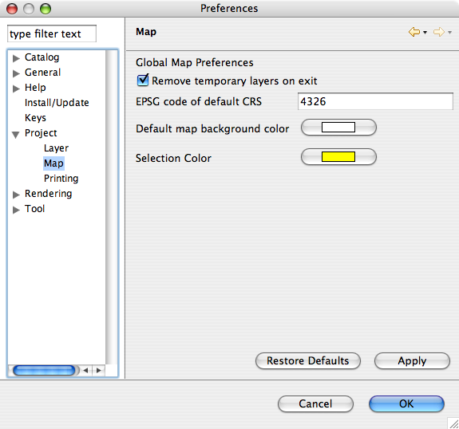

The Preferences dialog is used to set user preferences. The titles of the preference pages can be searched by typing in part or all of a preference title in the filter area in dialog.
The Preferences dialog can be found under Window > Preferences in the main Workbench window.

 (c) Copyright (c) 2004,2005 Refractions Research Inc. and others.
(c) Copyright (c) 2004,2005 Refractions Research Inc. and others.